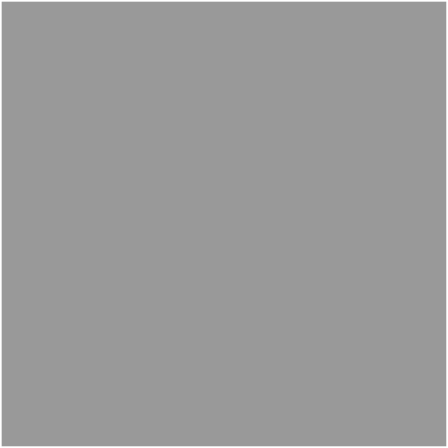
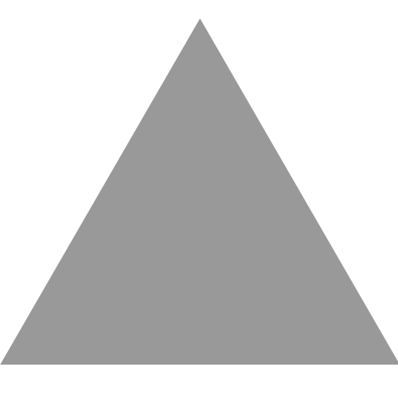
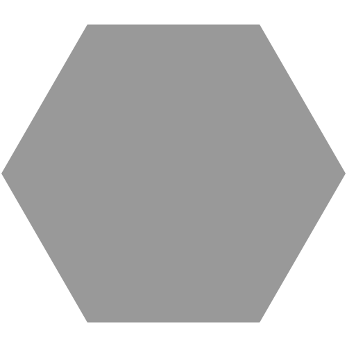
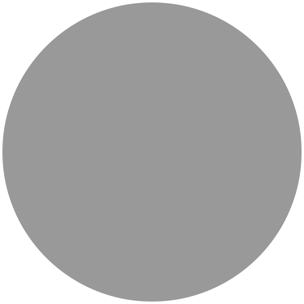

Welcome to ProtoNet!
ProtoNet is a network prototyping tool aiming to make the network configuration process easier, more efficient, and more reliable for users like you! This program offers a range of tools to help create and edit the layout of your network. And by following the security guidance offered by ProtoNet, you can build a stronger foundation on which to build your network.
Getting Started
The Network Configuration page is where network layouts are generated. When entering this page, you will be greeted by a form to help you get started. You can enter hardware requirements for your desired network here and select your preference between a secure or efficient configuration. From there, ProtoNet can generate a network layout to fit your requirements.
Alternatively, you can exit out of the form to start from scratch and build a custom network design. ProtoNet offers the tools needed to easily design and display network configurations.
Clicking the "Change Configuration" button in the bottom left corner of the page will bring the form back up again, allowing you to regenerate a configuration at any time.
Generated network layouts use symbols to represent different types of nodes of the network. The table below lists the types of nodes that can be included in configurations generated by ProtoNet, as well as the symbols that represent them.
| Type | Symbol | Abbreviation |
|---|---|---|
| Server |  | SE |
| Switch/Router |  | SW |
| Firewall |  | FW |
| Workstation |  | WS |
Connections between these nodes are represented by lines.
Additional Information
The Security Information page provides a detailed description of how ProtoNet generates secure configurations. This includes the guidelines that ProtoNet's secure configurations follow and the concepts behind them.
General Terms of Use
The purpose of ProtoNet is to provide network and security recommendations and, thus, shall not be held liable for applications beyond its intended use. ProtoNet is not a replacement for a qualified network professional, and the network configurations generated by this tool should be verified by one. ProtoNet and its affiliates are not responsible for the misuse of this tool, leading to the misconfiguration of your network.
We are using Node.js , Chromium , and Electron .